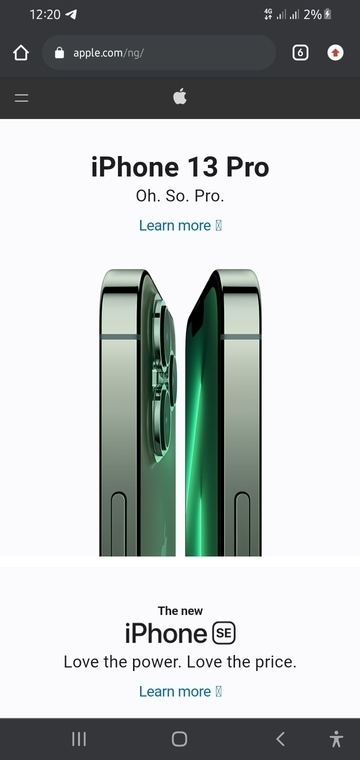

White Space
Apple
apple.com This site uses white space brilliantly to direct the user's attention to the subject and give the webpage an elegant look. Apart from the spaces between the elements at the center of the page and the edge, The white space between the head "iPhone 13 Pro", the "learn more" link and the image help communicate the relationship between them.
Contasts
Urbanears
urbanears.com
From the screenshot above, we can see that contrasts were used effectively to focus the reader's attention on "MADE FROM TRASH". The huge difference in color between the white text and the black background makes it extremely easy to read.
Fitt's Law
GitHub
github.comFitt's law basically explains that the longer the distance and the smaller the target's size, the longer it takes. Using a color like green that contrasts greatly with the background and making the buttons large enough such that the design can guide the viewer to that part of the page and enhance the experience.